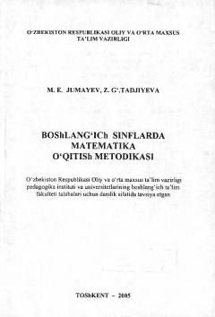

BSBoshlang'ich sinflarda matematika o'qitish metodikasi bo'yicha bo'lajak o'qituvchilar uchun darslik.
Mazkur darslik pedagogika instituti va universitetlarining boshlang'ich ta'lim yo'nalishi talabalari va bo'lajak boshlang'ich sinf o'qituvchilari uchun mo'ljallangan bo'lib, boshlang'ich sinflarda matematikani o'qitish metodikasining nazariy va amaliy masalalarini o'z ichiga oladi. Unda o'quvchilarda matematik tushunchalarni shakllantirish, darslarni tashkil etish va metodik tayyorgarlik masalalari atroflicha yoritilgan.